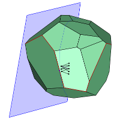

Research

-
J. Mackenzie Gallagher and Edward D. Kim.
Tail diameter upper bounds for polytopes and polyhedra.
[arxiv]
-
Edward D. Kim.
Relating graphs of trigonometric functions to points on the unit circle via using special-purpose rulers.
Wisconsin Teacher of Mathematics, 67(2):23-26, 2015.
-
J. Mackenzie Gallagher and Edward D. Kim.
An improved upper bound on the diameters of subset partition graphs.
2014.
[arxiv]
-
Tristram C. Bogart and Edward D. Kim.
Superlinear subset partition graphs with strong adjacency, endpoint-count, and dimension reduction.
To appear in Combinatorica, 2015.
[arxiv]
-
Jesús A. De Loera and Edward D. Kim.
Combinatorics and geometry of transportation polytopes: An update.
In Discrete Geometry and Algebraic Combinatorics,
volume 625 of Contemporary Mathematics,
pages 37-76.
American Mathematical Society, Providence, RI,
2014.
[doi]
[arxiv]
-
Edward D. Kim.
Polyhedral graph abstractions and an approach to the Linear Hirsch Conjecture.
Mathematical Programming, Series A, 143:357-370, 2014.
[doi]
[arxiv]
-
António Guedes de Oliveira, Edward D. Kim, Marc Noy, Arnau Padrol, Julian Pfeifle, Vincent Pilaud.
Polytopal complexes realizing products of graphs.
XIV Spanish Meeting on Computational Geometry,
June 2011.
-
Edward Dong Huhn Kim.
Geometric Combinatorics of Transportation Polytopes and the Behavior of the Simplex Method.
PhD thesis, University of California, Davis. Davis, CA, 2010. [files]
-
Edward D. Kim, Francisco Santos.
An update on the Hirsch conjecture.
Jahresbericht der Deutschen Mathematiker-Vereinigung, 112(2):73-98, 2010.
[doi]
[arXiv]
-
Anna Gundert, Edward D. Kim, Daria Schymura.
Lattice paths and Lagrangian matroids.
Technical Report, Centre de Recerca Matemàtica,
2009.
-
Jesús A. De Loera, Edward D. Kim, Shmuel Onn, and Francisco Santos.
Graphs of transportation polytopes.
Journal of Combinatorial Theory, Series A, 116(8):1306-1325, 2009.
[doi]
[arXiv]